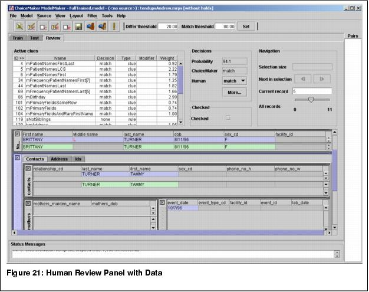

|
|
|
10 Human review
The human review panel becomes available once the user has selected a probability model, a marked record pair source, and has computed the probabilities in the testing panel. The purpose of the panel is to display the data contained in a specified record pair. If no record pair has been selected, the panel appears devoid of data as shown in Figure 20.
The data is broken up into panels, usually one for each node type (table) of the schema. E.g., Figure 21 shows panels Patient, mothers, Names, contacts, and address. Each panel is divided into two halves with the upper half (blue) representing data from the first, or query record of the record pair and the lower half (green) representing the corresponding data from the second, or match record in the pair. If the value of a cell is invalid according to the validity definition of the schema, the background is grey. Data in black indicate that the data matches between the records, while data in red indicates that it is unique to one record. Derived fields are in italics.
Panels displaying non-stacked data, e.g., Patient, never have scrollbars. Panels displaying stacked data, e.g., all other panels, always have scroll bars. Figure 21 shows stacked names for the green record. The panel names and column headers can be defined in the schema (Chapter IX.2).
The names of derived fields appear between angular brackets, unless name has been explicitly specified. The displaying of a field can be prevented (Chapter IX.2).
The layout of the data associated with each record-pair consists of one top-level frame. Each frame can contain tables and child frame, and each frame may contain tabs. Tables display actual data in row-and-column format. Tabbed frames are two or more frames occupying the same screen space, only one of which is visible at any given time. Frames may contain one or more smaller, child frames.
The default layout is automatically configured based on the ChoiceMaker schema. It shows one copy of each node type table with all columns activated.
The user may alter the tables in a layout in the following ways:
- Moving an individual table by clicking the title bar and dragging it to the desired location.
- Resizing an individual table by dragging a side to the desired height or width.
- Inserting additional tables. This ability is given in the context menu of the frame in which to display the table. A layout may contain multiple copies of the same table, possibly showing different columns. This is especially useful if some node types contain very many fields. In this case multiple tables of the same node type with different columns shown can be displayed.
- Removing a table by clicking its close button on the top left.
- The width of table columns can be adjusted by clicking the column borders and dragging the mouse.
- Table columns can be reordered by drag and drop.
- Table columns can be hidden through a popup menu, which is displayed by pressing the right mouse button when the mouse pointer is over the table background.
- Dragging the divider between the two records.
The user may alter the frames in a layout in the following ways:
- Moving a child frame by clicking on the title bar and dragging it to the desired location.
- Resizing a child frame by dragging a side to the desired height or width.
- Resizing a frame (including the top-level pane) through its context menu: "Add Space to the Right", "Add Space to the Bottom", and "Fit Contents"
- Inserting additional child panes. This ability is given in the context menu of the parent pane.
- Removing a child frame by clicking its close button on the top-left.
- Renaming a pane (excluding the top-level frame) through its context menu: "Rename Frame..."
- Adding a tab to a frame. This ability is given in the context menu of the frame.
- Removing a tab from a frame. This ability is also given in the context menu of the frame.
- Renaming a tab. This ability is also given in the context menu of the frame.
A new layout, which originally is based on the default layout, can be created with Layout->New. Upon modifying a layout, it can be saved under the current name with Layout->Save or under a different name with Layout->Save As.... An existing layout can be opened with Layout->Open... or by choosing one of the most recently used layouts from the shortcut list at the end of the Layout menu.
There are several ways to select a record for viewing:
- The user can directly type in the index of a record pair in the Current Record field of the navigation area on the human review panel. The user may access any record in the source by this method.
- The user can click on the slider in the navigation area. The user may access any record in the source by this method.
- By clicking on the forward and reverse buttons of the Next in Category field, the user may step through the record pairs contained in the current record pair list displayed on the right side of the screen.
- By clicking on an index in the record pair list.
As shown in Figure 22, the decision area of the human review panel displays the human-marked decision followed by the ChoiceMaker decision and the ChoiceMaker probability. Recall that the ChoiceMaker decision depends on the match and differ thresholds. The ChoiceMaker decision appears in black if it agrees with the human decision and in red otherwise. A `[R]' appears after the ChoiceMaker decision if it is based on a rule.
The More... button brings up a window which displays additional information about the marked record pair (Figure 23).
The content of the table to the right of the decision area depends upon the type of the clue set (Chapter IV). If the type is boolean, it lists the clues that were active on the shown record pair. For other types, all the enabled clues are shown along with the value of the clue for the displayed record pair.
As with the large clue table shown on the training panel, the data displayed in the active clue table can be sorted on any column by clicking the column header.
When using ModelMaker to review pairs, one may want to see as much data as possible at once. To this aim, it is possible to hide the active clues table, the status panel, the toolbar, and possibly also the pair list through the respective checkbox menu item of View. Figure 24 shows the same layout as Figure 21 with all auxiliary panels hidden.
Modification of record data is very useful to test clues. The user can edit any of the non-derived values displayed in any of the data tables by double clicking on a cell. After editing a cell the user should press enter so that the new data becomes active. In panels showing stacked data, new rows can be inserted and existing rows deleted through the context menu.
The active clues and the match probability are immediately recomputed. On the other hand, the record remains in the pair list even if it no longer satisfies the criteria of the active filter and the statistics of the Train and Test panels are not recomputed. The user must select Model->Evaluate or Model->Train to update them.
The user may also change the human-marked decision by selecting a decision from a drop-down list.
After changing the data, the user may save it by selecting Source->Save. Saving is possible for many marked record pair source types, including XML and flat file. For other types, it may be necessary to first create an XML or flat file source with the same data.
It is also possible to save a subset of the record pairs, as described below.
Pairs of interest can be checked by navigating to the pair in question and checking the box. The checked pairs can then be selected or saved with Source->Save checked as.... All pairs can be checked and unchecked with Source->Check all and Source->Uncheck all, respectively. The checked pairs can be selected with Source->Select checked.
|
|
ChoiceMaker Technologies http://www.choicemaker.com Voice: (212) 905-6030 Fax: (212) 331-1106 info@choicemaker.com |